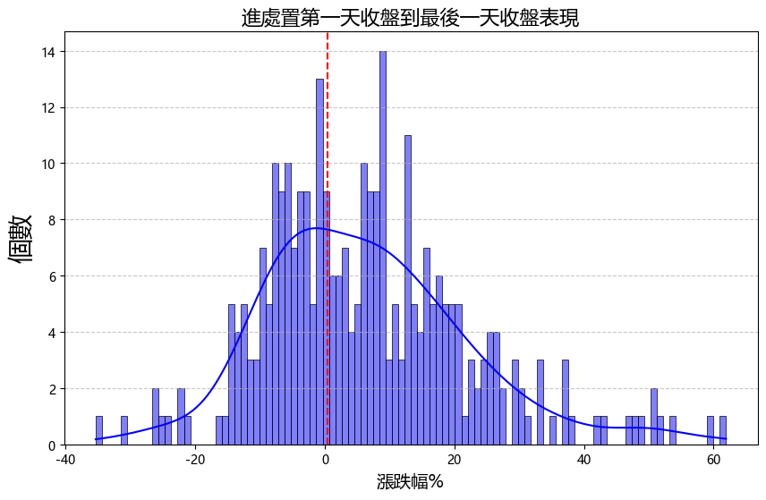

個股策略筆記

處置股策略
處置股策略
(一) 策略發想
俗話說：「越關越大尾」
處置股往往是市場上最飆的股票。以往進入處置時，大家擔心流動性被限制帶來風險而提前賣出，但實際觀察卻發現處置期間的股票不僅不跌，甚至可能越關越大尾。
(二) 回測條件
- 回測時間：2020年6月到2024年11月
- 回測範圍：處置股（5分盤）
(三) 統計資料介紹
- 交易期間：從 2020-06-09（光洋科）到 2024-11-06（光聖）
- 總交易次數：584筆
排除條件：
- 非強勢股（進處置前一天 20 日平均 RS < 20）
- 股價 < 10 的雞蛋水餃股
- 20 日平均成交量 < 1000
(四) 回測結果優化
1. 進處置第一天開盤收盤差異
- 平均賠錢：-4.25%
- 平均賺錢：3.97%
- 勝率：38.86%
結果：進處置第一天開盤馬上買進效果不佳

2. 出處置前一天開盤收盤差異
- 平均賠錢：-4.07%
- 平均賺錢：4.55%
- 勝率：50.53%
結果：出處置前一天股價變化不大
3. 出處置第一天開盤收盤差異
- 平均賠錢：-5.08%
- 平均賺錢：4.59%
- 勝率：41.01%
結果：出處置後第一天收盤賣出效果不佳

4. 進處置第一天開盤收盤差異過大
若進處置第一天跌幅超過 10%，後續表現更差，平均虧損達 -2.71%。

(五) 重新統計
策略條件：
- 買進：進處置第一天收盤即買進
- 賣出：出處置前一天收盤賣出
- 篩選條件：
- 進處置前一天的 20 日 RS > 20
- 進處置前一天需收紅
- 進處置第一天跌幅 < 10%
統計結果：
- 平均賠錢：-7.91%
- 平均賺錢：15.91%
- 勝率：60.33%

1. MAE累計圖分析
透過 MAE累計圖 可發現：
如果 MAE 超過 -15%，之後基本上不會再賺錢，因此可以即早停損，提升資金使用效率。
- 平均賠錢：-8.18%
- 平均賺錢：15.93%
- 勝率：60%
即便進行停損，勝率僅略有下降。然而，如果不加篩選全部買進，仍可能導致操作標的過多。

2. 與5MA線的距離
回測發現，進處置前一天若乖離 五日均線（5MA） 太多或太少，後續表現均不理想：
- 乖離過大：可能已用盡最後的波紋導致表現不佳。
- 乖離過小：可能缺乏原本就不夠強勢。
因此設定額外篩選條件：
處置前一日距離五日線須介於 5% 至 15% 之間。
優化結果：
- 平均賠錢：-6.71%
- 平均賺錢：15.97%
- 勝率：66.29%
- 總交易筆數：183筆
同時，優化後每日平均持有檔數下降，平均持倉剩 2檔，進一步提升資金效益。
備註：
另有 2 筆進處置時股價低於 年線（240MA） 的交易記錄，後續表現同樣不佳，但樣本數不足，需進一步觀察。

(六) 現實考量
- 胃納量問題
- 處置股流動性差，即使報酬率不錯，資金可能無法有效放大。
- 資金效益問題
- 事件交易可能導致資金閒置，需考慮其他孳息機會。
(七) 結論
此策略具備高勝率與優秀賺賠比（超過 2:1）。雖然有胃納量與資金效益的限制，但作為事件交易選擇，期望值表現優秀。
(八) 相關連結
透過以下網站追蹤目前上市櫃處置股：